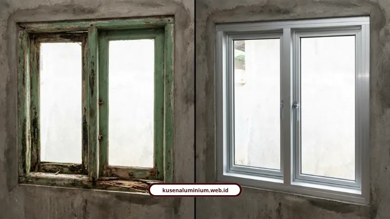
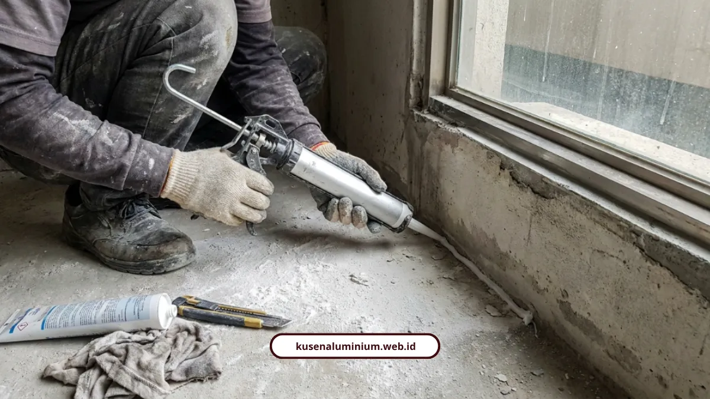

Kusen Aluminium Anti Karat untuk Iklim Malang

📌 Ringkasan Inti
Penjelasan mendalam mengenai keunggulan kusen aluminium anti karat dalam menghadapi iklim lembap khas Malang Raya, standar ketebalan profil, hingga teknik instalasi kedap air:
- Material kusen aluminium anti karat tidak lapuk, bebas rayap, dan tidak menyusut atau memuai akibat udara dingin dan lembap di Malang Raya.
- Panduan ketebalan ideal rumah tinggal: 1,0 mm (jendela kecil), 1,2 mm (jendela utama), hingga 1,4–1,5 mm (pintu geser/bukaan lebar).
- Komparasi merek bereputasi tinggi: YKK AP (premium anodize + powder coating 2 lapis) dan Alexindo (tahan cuaca tropis harga bersahabat).
- Pilihan teknologi finishing: Anodized elektrokimia, Powder Coating matte/glossy tahan lembap, hingga PVDF coating anti-UV.
- Kunci kedap air: pengisian PU foam celah 20 mm, sealing silikon berkualitas, serta sistem weather-seal karet EPDM ganda bergaransi.
- Kenapa Kusen Kayu Cepat Rusak di Malang?
- Berapa Ketebalan Aluminium yang Ideal untuk Rumah Tinggal?
- Merek Apa Saja yang Punya Reputasi Anti Karat Bagus?
- Finishing Mana yang Paling Tahan Iklim Tropis?
- Bagaimana Cara Pasang Kusen Aluminium Agar Tidak Bocor?
- Bagaimana Cara Rawat Kusen Aluminium Biar Awet?
- Bagaimana Standar Anti Karat yang Kami Pakai?
- Aluminium Anti Karat Investasi Jangka Panjang
- FAQ Seputar Kusen Aluminium Anti Karat
Kusen aluminium anti karat jadi jawaban paling masuk akal buat rumah di Malang yang kelembapannya tinggi sepanjang tahun. Material ini tidak lapuk, tidak dimakan rayap, dan minim perawatan dibanding kusen kayu.
Saya paham betul keresahan warga Batu atau Karangploso soal kusen kayu yang gampang berjamur. Makanya saya kupas tuntas soal ketebalan, finishing, sampai cara rawat yang benar di bawah ini.
Kenapa Kusen Kayu Cepat Rusak di Malang?
Karena kelembapan udara di Malang cenderung tinggi sepanjang tahun, dan kayu menyerap air dengan mudah. Efeknya kusen memuai, menyusut, lalu lama-lama lapuk atau dimakan rayap.
Aluminium tidak punya masalah ini. Sifatnya anti karat, tidak berubah bentuk meski kena hujan atau panas berlebih, dan tidak butuh pelapis anti rayap tambahan sama sekali.
Meski investasi awalnya sedikit lebih mahal dari kayu standar, biaya perawatan tahunan yang hilang bikin total pengeluaran jangka panjang jadi lebih hemat.
Berapa Ketebalan Aluminium yang Ideal untuk Rumah Tinggal?
Semakin tebal profilnya, semakin stabil menahan tekanan angin dan beban kaca. Untuk rumah tinggal, ini panduan ketebalan yang direkomendasikan:
- 1,0 mm: cocok untuk jendela kecil dan interior
- 1,2 mm: standar ideal untuk jendela utama
- 1,4 mm - 1,5 mm: direkomendasikan untuk pintu geser dan bukaan besar
Sedangkan untuk bangunan komersial atau fasad, ketebalannya beda lagi:
- 2,0 mm: area perkantoran dan apartemen
- 2,5 mm - 3,0 mm: gedung tinggi, hotel, atau fasad kaca lebar yang kena tekanan angin kencang
Profil yang umum beredar ada dua ukuran, yaitu 3 inci dan 4 inci, tergantung kebutuhan bukaan.
Merek Apa Saja yang Punya Reputasi Anti Karat Bagus?
Ada beberapa merek yang sudah terbukti tahan cuaca ekstrem, tapi karakteristiknya beda-beda. Berikut rangkumannya:
- YKK AP (kelas premium): ketebalan 1,35-1,46 mm, pakai sealing EPDM yang kedap air dan suara, finishing anodize plus powder coating 2 lapis. Estimasi harga Rp250.000-Rp350.000 per meter.
- Alexindo (kelas menengah): ketebalan 1,0-1,15 mm, seimbang antara kualitas tahan cuaca tropis dan harga terjangkau. Estimasi harga Rp150.000-Rp250.000 per meter.
- Merek lain: Alfalum (presisi tinggi), HP Metal (ekonomis), Alcomexindo, Superex, dan Inkalum yang sanggup menahan beban besar hingga tebal 2,0 mm.
Rakay Diso, SEO Writer dan pengamat properti di CariProperti, punya pandangan soal ini:
"Penggunaan aluminium semakin diminati karena dikenal kuat, tahan cuaca, serta minim perawatan. Setiap merk memiliki karakteristik berbeda dari ketebalan profil hingga pilihan finishing, sehingga memahami perbedaan tiap merk menjadi langkah penting."
Kalau Anda masih bingung berapa anggaran yang perlu disiapkan untuk beli material dengan spesifikasi di atas, kami sudah rincikan lengkap di harga kusen aluminium per meter di Malang 2026.
Paket Pemasangan Kusen Aluminium Anti Karat Malang Raya
Solusi bukaan bebas rayap dan anti lapuk untuk hunian di Malang, Batu, dan Karangploso. Dilengkapi profil SNI, sealing kedap air EPDM, dan kartu garansi pengerjaan resmi.
Finishing Mana yang Paling Tahan Iklim Tropis?
Tergantung prioritas Anda, tapi ada empat pilihan yang biasa dipakai:
- Anodized: lapisan pelindung elektrokimia, tahan karat, tidak gampang terkelupas, tampilan metalik natural
- Powder coating: cat bubuk yang dilelehkan merata, warna tajam matte atau glossy, cocok untuk daerah lembap
- PVDF coating: grade tertinggi, tahan radiasi UV, hujan asam, dan suhu ekstrem
- Woodgrain finish: motif serat kayu alami tapi tetap bebas rayap
Nizwa Rizqin Qinthara, penulis edukasi material bangunan dari YKK AP Sinar Fortuna, menegaskan poin pentingnya:
"Salah satu kelebihan utama kusen aluminium di iklim tropis adalah sifatnya yang anti-karat dan tidak mudah berubah bentuk meskipun terkena hujan atau panas berlebih, sehingga tetap stabil tanpa memerlukan pelapis anti-rayap tambahan."
Bagaimana Cara Pasang Kusen Aluminium Agar Tidak Bocor?
Kuncinya ada di celah antara kusen dan dinding, jangan sampai diisi asal-asalan. Celah sekitar 20 mm perlu diisi penuh pakai polyurethane foam, lalu dilapisi sealant silikon.

Khusus jendela sliding, ada trik tambahan biar tidak rembes air hujan:
- Gunakan rel dengan pinggiran luar lebih tinggi
- Buat lubang pembuangan air atau weep holes
- Pasang holo aluminium 3/4 inci atau siku L di belakang rel sebagai penahan limpasan air
Atok, ahli renovasi dan interior dari Dewape Design, menambahkan soal detail yang sering terlewat:
"Untuk memastikan kekokohan dan kenyamanan kusen aluminium di daerah lembap, pastikan karet penyekat antara aluminium dan kaca terpasang kencang guna meredam getaran serta kebisingan. Gunakan aksesoris engsel, kunci, dan handle berbahan stainless steel agar tidak mudah berkarat."
Bagaimana Cara Rawat Kusen Aluminium Biar Awet?
Perawatannya jauh lebih sederhana dibanding kusen kayu, cukup rutin dua hal ini:
- Bersihkan permukaan pakai larutan air hangat dan sabun cair ringan dengan kain mikrofiber lembut
- Lumasi komponen mekanis seperti engsel, kunci, dan rel pakai pelumas silikon, hindari oli motor karena mudah mengikat debu dan pasir
Kalau Anda menggunakan produk dengan standar SNI dan sistem karet EPDM ganda seperti yang kami pasang, perawatan rutin di atas biasanya sudah lebih dari cukup untuk menjaga performa puluhan tahun.
Bagaimana Standar Anti Karat yang Kami Pakai?
Kami hanya menggunakan profil murni bersertifikat SNI dari YKK AP, Alexindo, dan Forta, dengan ketebalan 1,1 mm sampai 1,35 mm. Setiap frame dilengkapi karet weather-seal EPDM ganda untuk mencegah rembesan air sekaligus meredam bising dari luar.
Kami juga melayani Kota Malang, Kabupaten Malang, dan Kota Batu dengan fasilitas survei lokasi gratis sebelum pengerjaan, jadi spesifikasi ketebalan bisa disesuaikan langsung dengan kondisi bukaan rumah Anda.
"Di iklim dingin dan lembap Malang Raya, kunci keawetan kusen aluminium anti karat bukan cuma pada bahan profil SNI, tapi kombinasi karet EPDM ganda dan presisi miter 45 derajat agar air tidak pernah menemukan jalan masuk."
Aluminium Anti Karat Investasi Jangka Panjang
Kalau rumah Anda ada di kawasan lembap seperti Batu atau Karangploso, kusen aluminium anti karat jelas pilihan yang lebih rasional dibanding kayu. Bukan cuma soal gaya minimalis, tapi soal berapa lama material itu bisa bertahan tanpa perlu dirawat macam-macam.
Sebelum menentukan merek dan ketebalan, ada baiknya cek dulu rincian harga kusen aluminium per meter biar anggaran Anda sesuai spesifikasi yang dibutuhkan. Anda juga bisa lihat langsung hasil pengerjaan kami di galeri proyek.
FAQ Seputar Kusen Aluminium Anti Karat
Aluminium murni memang tidak berkarat seperti besi, tapi tetap bisa kusam kalau tidak dilapisi finishing seperti anodized atau powder coating. Karena itu pilih produk dengan lapisan finishing yang jelas.
Aman, bahkan jadi salah satu material paling direkomendasikan untuk area basah karena sifatnya non-porous dan tidak menyerap air seperti kayu.
Dengan perawatan rutin sederhana, finishing anodized bisa bertahan puluhan tahun tanpa terkelupas, jauh lebih lama dibanding cat kayu yang perlu diulang tiap 3-5 tahun.